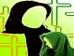

پذيرش > سایت نوشته ها > حمایت قانونی یا خشونت قانونی /گلناز به گو/ زنستان


 حمایت قانونی یا خشونت قانونی /گلناز به گو/ زنستان حمایت قانونی یا خشونت قانونی /گلناز به گو/ زنستان
17 مهر 1386 - - نسخه قابل چاپ
خشونت عليه زنان رفتاري است كه تنها به دليل جنسيت زن به او اعمال مي شود و در نهايت منجر به صدمه جنسي، چسمي و رواني زن مي شود .اين خشونت يك رفتار همه گير جهاني است كه اساسا در خفا پيش برده مي شود و امروزه يكي از مهمترين مباحث مورد بحث جوامع بشري است.
زنان هميشه با نمايان ترين حالت تبعيض و نابرابري در تمامي زندگي و در سراسر جهان روبه رو هستند. خشونت عليه زنان با اشكال مختلف جسمي وجنسي، خانگي، دولتي، اجتماعي و فرهنگي نمايان مي شود و گاه عوارض غير كشنده ی فيزيكي و رواني دارد و در پاره ی اوقات نیز عواقبي كشنده .
با بررسي قوانين حمايت از خانواده وهمجنين لايحه جنجالي اخير كه چندي پيش توسط دولت نهم به مجلس ارائه شد به اين نتيجه مي رسيم كه برخي از مفاد قانوني ونيز اين لايحه نه نتها گامي در جهت تحكيم و حمايت از كانون خانواده نيست بلكه يك خشونت قانوني است كه زمينه ساز اعمال خشونت هاي بيشتر خانگي و اجتماعي خواهد شد.
نوك پيكان اين ادعا در ماده 23 اين لايحه و يا به عبارتي ماده 16 قانون حمايت از خانواده مصوب 15 بهمن 53 ديده مي شود. با اين تفاوت كه در لايحه ی اخير اثري از شرط رضايتِ همسر اول نيست درحالي كه قانون مصوب سال 53، مردان را مکلف به کسب اين اجازه از همسر اول خود ميکرد. قانوني که در صورت تصويب لايحهي جديد، اعتبار خود را از دست خواهد داد. آنچه مشهود است خشونت نهفته در این مساله، چه قانون قدیمی و چه لایحه ی جدید، مبنی بر ازدواج مجدد زن است. علي رغم اينكه در قانون مصوب سال 53 اجازه ی همسر اول ضروري بوده ولي تجربه نشان داده است كه كسب اين تكليف به راستي فرماليته بوده، چرا که اولا مردان براي صيغه كردن احتياجي به اجازه ندارند و ثانيا بارها ديده شده است كه مردان با ايجاد ترس، وحشت و بعضا ضرب و شتم كه خود مصداق بارزخشونت خانگي است زنان را مجبور به اعلام رضايت كرده اند .
به طور كلي اينكه مرد مي تواند از لحاظ قانوني چند همسر داشته باشد_ خواه با اعلام رضايت خود زن ويا صدور اجازه از دادگاه_ فضاي خانواده را براي زن مكاني پر از اضطراب، نگراني و بي اعتمادي مي كند كه در نهايت موجب افسردگي و خشم دروني او مي شود چرا كه اين حس نگراني دائما به او دست خواهد داد كه به راحتي قابل جايگزيني است.
حال با حذف رضايت زن در لايحه جديد نه تنها اين اضطراب بيشتر خواهد شد بلكه از طرفي نيز از حس ناتواني و اينكه زندگي خارج از كنترلش است بي بهره نخواهد بود پس زن خواه ناخواه به اين نتيجه خواهد رسيد كه اصلا مهم نيست او چه مي خواهد و تنها مهره اي است در سيستمي كه طوري طراحي شده است كه او را سر سوزني در نظر نگرفته است. مجموعه اين حس ها موجب خشم بيشتر او خواهد شد. از آنجا كه اساسا نظام فكري سنتي و مرد سالار ما به او چنين آموخته است كه تا كارد به استخوانش نرسد لب به اعتراض نگشايد و يا اگر سخني از نارضايتي به ميان آورد منتظر عواقب بعدي باشد پس به ناچار خشم خود را فرو خواهد خورد و از آن جايي كه خشم بيان نشده مهم ترين مانع اقتدار يك زن است، تا زماني كه نتواند با خشم خود مواجه شود احساس درماندگي، بي ارزشي و نارضايتي مي كند و اساسا تجلي نهايي دروني كردن خشم، چيزي جزافسردگي نيست.
طبيعي است كه در اين حالت افسردگي، زنان به دنبال راهكارهایی هستند اما آنها در انتخاب اين راهكار معمولا به دو دسته عمده تقسيم مي شوند، دسته نخست آنهايي كه به روي عواطف و احساسات خود سر پوش مي گذارند و راه را بر خشم خود مي بندند و وانمود مي كنند كه زندگي طبيعي دارند و با ظاهر سازي و سر گرم كردن خود، احساسات و عواطف شديد خود را سرپوش می گذارند.
اينها زناني هستند كه به تصور اينكه قسمت آنها در زندگي چنين بوده بدان تن در مي دهند و دركي از تلاش براي تغيير زندگي ندارند زيرا معتقدند كه بر هيچ چيز كنترل ندارند. اين مفهوم كه آنان براي به دست گرفتن اختيار سرنوشت خويش آخرين و كمترين حق را دارند براي رشد فرديشان خطرناك است و آنها را عملا تبديل به انساني مي كند كه از درون نابود شده است هرچند كه به ظاهر نفس مي كشد. اما افسردگي در دسته دوم تا بدانجا پيش مي رود كه حركتي پويا در زنان به وجود مي آورد كه از ديگران مي خواهند دست از رنجاندن آنان بردارند. اينجاست كه ممكن است خودكشي، خودسوزي، شوهر كشي ويا هووكشي پاسخ نهايي به اين خشم وتنها راه رهايي به نظر برسد اين درست همان چيزي است كه از آن به عنوان خشونت دولتي ياد مي كنند. خشونتي كه دولتها با وضع قوانينی نابرابر موجب خشم زن و صدمه رواني به وی مي شون
ارسال به
بالاترین
،
توییتر
،
فریندفید
،
فیسبوک
در همين بخش :
 یک خبر تلخ؟ یک قانونشکنی؟ یک تصمیم بخشنامهای جدید؟ یک خبر تلخ؟ یک قانونشکنی؟ یک تصمیم بخشنامهای جدید؟
چرا بایست به سکسوالیته پرداخت؟ / نفیسه آزاد
آزارجنسی خانگی؛ «قربانی» نه، «نجات یافته»
زنان، بزرگترین بازندگان بهار عرب
سانسور از دیدگاه جنسیتی/الهه امانی
ديگر بخش ها :
طرح یک میلیون امضا
|
مقالات
|
سایت نوشته ها
|
اخبار
|
گزارش كمپين
|
گفت و گو
|
علیه سکوت
|
كوچه به كوچه
|
نامه های شما
|
گزارش ویژه
|
گفتگو با اعضا
|
ویژه سالگرد کمپین
|
تصویر برابری
|
دل آرام علی
|
تریبون
|
مقالات
|
تاریخ شفاهی
|
خارج از چارچوب
|
کتابخانه
|
درباره کمپین
|
کمپین در شهرها
|
کمپین در بند
|
صدای تغییر
|
ویژه 22 خرداد
|
لایحه حمایت از خانواده
|
گالری
|
عشا مومنی
|
امیر یعقوبعلی
|
خدیجه مقدم
|
راحله عسگری زاده و نسیم خسروی
|
پروین اردلان،جلوه جواهری، مریم حسین خواه، ناهید کشاورز
|
زینب پیغمبرزاده
|
سعیده امین، سارا ایمانیان، محبوبه حسین زاده، ناهید کشاورز و همایون نامی
|
احترام شادفر
|
نسیم سرابندی زاده،فاطمه دهدشتی
|
وبلاگ مهمان
|
پرونده خرم آباد
|
دستگیری ها
|
مریم مالک
|
پرستو اللهیاری
|
مهرنوش اعتمادی
|
سمیه رشیدی
|
Other Languages
|
همراهان
|
«فراخوان کمپین ده روز با بهاره هدایت»
| English
|